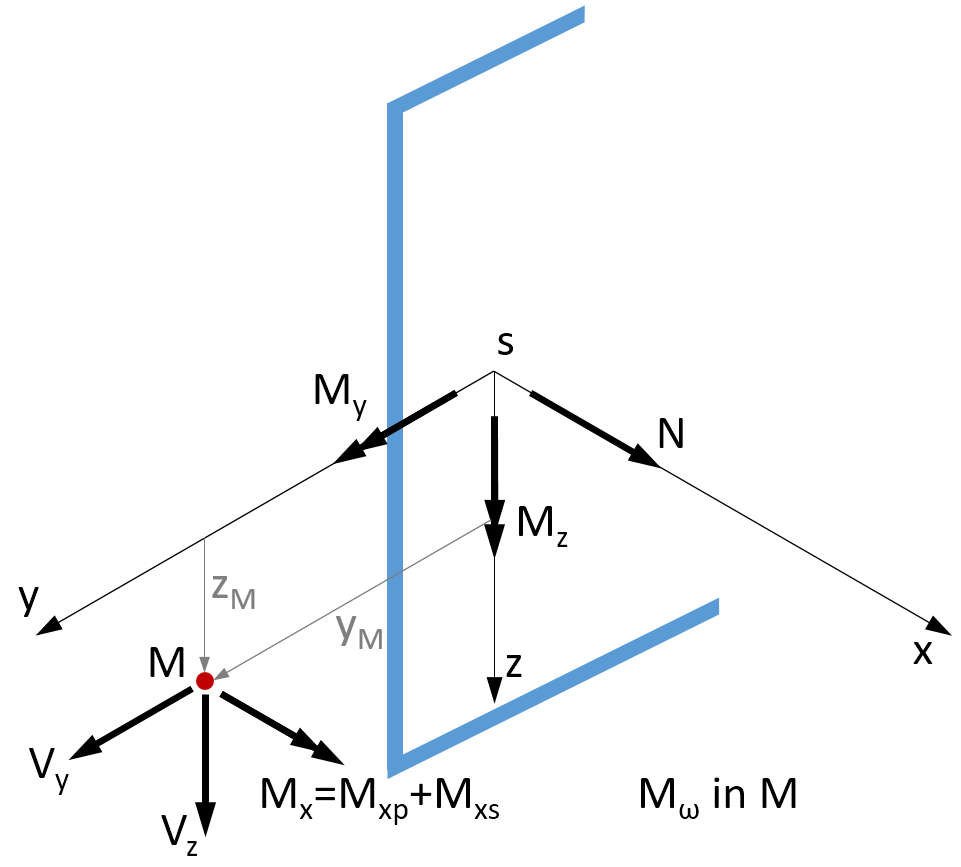
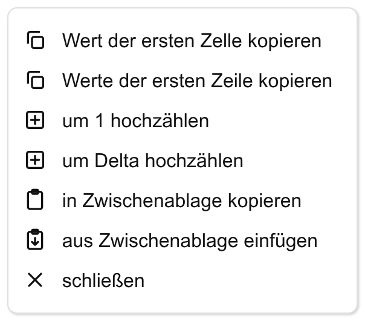
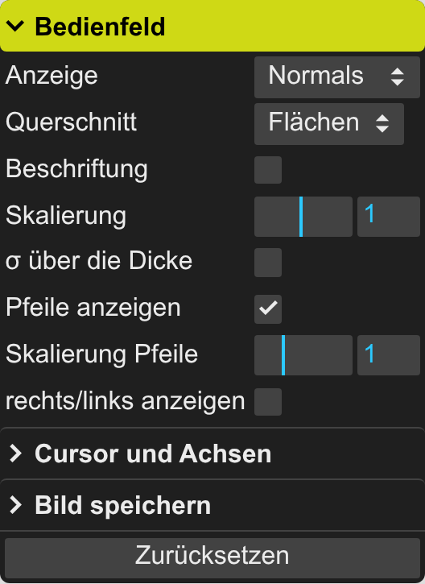

▶ duennQs öffnen – Querschnittswerte und Spannungen dünnwandiger Querschnitte berechnen
Übersicht
Koordinatensystem und Vorzeichen
Beispiel
Hinweise zur Bedienung der App
Tabellen und Kontextmenü
Dateien, PDF und automatische Sicherung
Eingabe als Text und mit KI
Darstellung 2D (Tab System)
Darstellungen 3D
Bezeichnungen
Voreinstellungen
Installation der App auf dem Desktop
Kompatibilität
Hilfe: Meine Tastatur hat keine Minus-Taste, virtuelle Tastatur
Kontakt und Fehlermeldungen
Mit dieser Webanwendung kannst du Querschnittswerte und Spannungen von dünnwandigen Querschnitten berechnen. Verwendet wird das Mittellinienmodell (Drahtmodell), gelöst wird mit der Methode der finiten Elemente [1], [2]. Der Querschnitt wird ähnlich wie ein Stab- oder Fachwerk durch gerade Elemente beschrieben, die über Knoten miteinander verbunden sind. Jedes Element muss mit mindestens einem anderen Element verbunden sein, es darf also keine Elemente „alleine“ im Querschnitt geben. Von jedem Element muss es einen Pfad zu allen anderen Elementen geben.
Die Knotenkoordinaten gibst du in einem ȳ-z̄-Hilfskoordinatensystem ein, dessen Ursprung beliebig gewählt werden kann. Jedes Element hat einen Anfangs- und einen Endknoten und kann quadratische Schubspannungsverläufe exakt darstellen. Eine Verfeinerung ist deshalb nicht erforderlich. Wenn du gedanklich vom Elementanfang zum Elementende blickst, liegt die rechte Seite des Elements an deiner rechten Hand.
Da die Elemente unterschiedliche Materialeigenschaften haben können, sind Bezugswerte für E-Modul und Querdehnzahl anzugeben. Die berechneten Querschnittswerte sind ideelle Werte, die auf diese Bezugswerte bezogen sind. Verwendest du sie für einen Stab in einem Stabwerksprogramm, gib dort dieselben Bezugswerte als Materialdaten an.
Die Normalspannungen infolge N, My und Mz werden mit den üblichen Formeln der Mechanik unter der Annahme des Ebenbleibens der Querschnitte nach Bernoulli berechnet, die Normalspannungen infolge Mω über die Wölbordinate. Schubspannungen sind positiv, wenn sie in Richtung des lokalen Koordinatensystems des Elements wirken. Die positive lokale Richtung zeigt vom Anfangs- zum Endknoten.
Eigenschaften des Programms:

Vorzeichen der Schnittgrößen
Vorzeichen am Element
Dieses Beispiel wird in [2] behandelt. Die Querschnittsdaten werden beim ersten Programmstart automatisch geladen, als Schnittgrößen sind dabei Vz = 500 kN und My = 600 kNm eingetragen.

In [2] wird der Querschnitt zusätzlich mit folgenden Schnittgrößen untersucht:
Mxp = 250 kNm; Mxs = 150 kNm; Mω = 10 kNm²
Vy = 1000 kN; Vz = 500 kN
Material: E = 21.000 kN/cm²; ν = 0,3
Die App hat die Tabs Eingabe, Ergebnisse, System, 3D, Info und ꔷꔷꔷ (Einstellungen). Wenn du mit der Maus über einen Button fährst oder ihn mit dem Finger lange drückst, erscheint ein kurzer Hilfetext.
Als Dezimaltrennzeichen sind Komma und Punkt zulässig, ein Tausendertrennzeichen nicht.
Den Text im Feld freier Text übernimmt die PDF-Ausgabe, zum Beispiel für Aufgabe und Namen. Einfache HTML-Formatierungen wie <b>fett</b> sind möglich.
Ist alle Elemente haben gleiche Materialdaten angekreuzt, gelten die Bezugswerte für alle Elemente. Die Spalten E und ν der Elementtabelle werden dann ausgeblendet. Mit fy,Rd werden im Tab Ergebnisse überschrittene Vergleichsspannungen rot markiert, in 3D kann fy,Rd zur Vergleichsspannung eingeblendet werden.
Mit Rechnen startest du die Berechnung, danach wechselt die App in den Tab Ergebnisse. Ist der Button Rechnen farbig hinterlegt, wurde die Eingabe seit der letzten Berechnung geändert.
Die Anzahl der Zeilen der Knoten- und der Elementtabelle änderst du mit − und + neben Anzahl Knoten bzw. Anzahl Elemente oder durch Eingabe der Anzahl. Zeilen kommen dabei am Tabellenende hinzu oder fallen dort weg.
In der Elementtabelle fügt + in der Spalte No oberhalb eine Zeile ein, der Papierkorb löscht die Zeile. Beides lässt sich rückgängig machen und wiederherstellen. In der Knotentabelle gibt es das bewusst nicht: nod1 und nod2 der Elemente verweisen auf die Knotennummern, die sich sonst unbemerkt verschieben würden. Die Nummern bleiben so auch passend zu deiner Skizze auf Papier.
Um die Eingabe zu beschleunigen, kannst du Werte in den Tabellen kopieren und generieren.
Markiere dazu einen Block, indem du mit gedrückter rechter Maustaste über die Zellen
ziehst. Beim Loslassen erscheint das Kontextmenü.
Touchscreens: Schalte zuerst im Tab ꔷꔷꔷ Selektion von Zellen mit Finger
erlauben ein. Dann markierst du die Zellen, indem du mit dem Finger oder Stift darüber
streichst. Nach dem Anheben erscheint das Kontextmenü.

Kontextmenü
Hinweis: An Tablets und Smartphones lässt sich auch eine Bluetooth-Maus und/oder -Tastatur anschließen.
Mit den Buttons über der Eingabe beginnst du eine neue Eingabe, liest eine gespeicherte Eingabe ein oder speicherst die aktuelle Eingabe. Eingabedateien haben die Endung .duennqs (unter Android .duennqs.json), ältere .txt-Dateien können weiterhin gelesen werden. Eine Datei kannst du auch einfach mit der Maus in das Fenster der App ziehen. Gibt es Änderungen, die noch nicht gespeichert sind, fragt die App vor einer neuen Eingabe oder dem Öffnen einer anderen Datei nach.
Im Tab Ergebnisse speicherst du die Ergebnisse mit dem PDF-Button als PDF-Datei, einschließlich Eingabe und Querschnittsgrafik.
Die aktuelle Eingabe wird automatisch im Browser gesichert, zum Beispiel wenn die App in den Hintergrund wechselt oder geschlossen wird. Beim nächsten Start ist sie wieder da. Das ersetzt nicht das Speichern in einer Datei.
Gibt es eine neue Version der App, erscheint eine Rückfrage, ob neu geladen werden soll. Die aktuelle Eingabe bleibt dabei erhalten.
Mit dem Button Querschnitt als Text (drittes Symbol über der Eingabe) fügst du Knoten, Elemente und weitere Angaben als Text ein. So kann eine KI wie Claude oder ChatGPT einen Querschnitt aus einer Zeichnung, einem Foto oder einer PDF-Datei ablesen und die Eingabe vorbereiten:
Bitte prüfen: Eine KI kann Maße falsch ablesen oder Außen- und Achsmaße verwechseln. Vergleiche den Querschnitt im Tab System mit der Zeichnung und lies die Annahmen in der Antwort der KI.
Das Textformat am Beispiel eines HEB 300 (Mittellinienmodell, ohne Ausrundungen):
# HEB 300: h = 300, b = 300, tf = 19, tw = 11 (mm) → Abstand der Flanschmittellinien 281 einheit mm y_rechts E 210000 nu 0.3 fyRd 235 My 120 text HEB 300 knoten 1 -150 0 2 0 0 3 150 0 4 -150 281 5 0 281 6 150 281 elemente 1 1 2 19 2 2 3 19 3 2 5 11 4 4 5 19 5 5 6 19
Mit aktuelle Eingabe als Text zeigt der Dialog die aktuelle Eingabe in diesem Format, zum Beispiel als Vorlage oder um sie einer KI zum Ändern zu geben. Eine Textdatei in diesem Format kannst du auch wie eine Eingabedatei öffnen oder in das Fenster ziehen. Gespeichert wird immer als .duennqs-Datei.
Im Tab System wird der Querschnitt in der ȳ-z̄-Ebene mit Schwerpunkt, Hauptachsen und Schubmittelpunkt gezeichnet. Das Fangkreuz zeigt die Koordinaten an und rastet an Knoten, Schwerpunkt und Schubmittelpunkt ein, an Knoten auch mit der Wölbordinate ω. Nummern blendet die Knoten- und Elementnummern ein und aus, SVG speichert die Grafik als SVG-Datei.
Im Tab 3D werden die Ergebnisse räumlich dargestellt. Die Werte werden in Richtung der Stabachse x aufgetragen. Mit der Maus drehst (linke Taste), verschiebst (rechte Taste) und zoomst (Mausrad) du die Ansicht, mit zwei Fingern drehst und zoomst du. Mit einem Finger werden Werte angezeigt oder die Ansicht verschoben, umgeschaltet wird mit dem Button links unten. Das Fangkreuz rastet an den Punkten der dargestellten Größe ein und zeigt den Wert an.
Die Einstellungen stehen im Bedienfeld. Es zeigt nur die Optionen, die zur gewählten Anzeige passen.

Bedienfeld
Knoten-Inzidenzen der Elemente:
nod1 = Knotennummer am Elementanfang
nod2 = Knotennummer am Elementende
Ageom = geometrische Querschnittsfläche, ohne Berücksichtigung der Materialdaten.
Achsen: ȳ, z̄ = Hilfskoordinatensystem der Eingabe; y, z = dazu parallele Achsen durch den
Schwerpunkt (auf sie beziehen sich die Schnittgrößen); 1, 2 = Hauptachsen mit I11
und I22. Achtung: In [2] heißen die Hauptachsen y und z.
r1, r2, rω = Wagner-Koeffizienten bezogen auf die Hauptachsen,
z. B. für das Biegedrillknicken. r1 gehört zu I22,
r2 zu I11. In [2] heißt der Wert zu Iy dort ry und der
zu Iz dort rz.
Schubspannungen aus primärer Torsion Mxp:
τxs0,L = Schubspannung aus dem Anteil offener Querschnitt, linke Seite, linear
über die Elementdicke
τxs0,R = Schubspannung aus dem Anteil offener Querschnitt, rechte Seite
τxs1 = Schubspannung aus dem Anteil geschlossener Querschnitt, konstant über die
Elementdicke
Schubspannungen aus Querkraft und sekundärer Torsion Mxs:
τxsa = Schubspannung am Elementanfang a
τxsm = Schubspannung in Elementmitte m
τxse = Schubspannung am Elementende e, alle konstant über die Elementdicke
Alle anderen Bezeichnungen analog.
Im Tab ꔷꔷꔷ stellst du die Sprache (Language), die Längeneinheit, die Schriftgröße, die Selektion von Zellen mit dem Finger sowie die Farben der Tabellen und die Akzentfarbe ein. Mit der Längeneinheit wird die Einheit der Spannungen angepasst: mm → N/mm²; cm → kN/cm²; m → MN/m². Vorhandene Eingabewerte werden dabei umgerechnet, danach ist neu zu rechnen. Die großen Schriftgrößen sind für die Projektion mit dem Beamer gedacht.
Die Einstellungen kannst du als Voreinstellung im lokalen Speicher des Browsers speichern, sie
stehen dann nach einem Neustart wieder zur Verfügung. Mit dem Button darunter werden die
Voreinstellungen wieder gelöscht.
Beim lokalen Speicher (local storage) handelt es sich nicht um Cookies. Diese Webanwendung
führt alle Berechnungen lokal im Browser in JavaScript durch. Es werden keine Daten mit einem
Webserver ausgetauscht. Nach dem Programmstart ist deshalb keine Netzwerkverbindung mehr
erforderlich.
Diese Anwendung ist als Webanwendung (Web App) programmiert, so dass du sie unter allen Betriebssystemen auf dem Desktop installieren kannst. Dafür wird ein Icon erstellt, und die App verhält sich wie eine aus einem Store installierte App. duennQs läuft weiterhin im Browser, allerdings ohne Bedienelemente wie die Adressleiste. Die Installation unterscheidet sich je nach Betriebssystem, Version und Browser.
Unter Android wählst du, nachdem duennQs einmal im Chrome-Browser geöffnet wurde, rechts oben im Anwendungsmenü (Drei-Punkte-Menü) die Option App installieren und bestätigst den Dialog. Auf dem Desktop gibt es dann ein neues Icon mit dem Namen duennQs.
Unter iOS verwendest du den Safari-Browser. Hier heißt der Befehl Zum Home-Bildschirm (Teilen-Symbol, dann das Symbol mit dem Plus).
Unter Microsoft Windows geht es ähnlich wie unter Android. Im Edge-Browser steht im Anwendungsmenü (Drei-Punkte-Menü) folgender Abschnitt:

Neuere Chrome-Versionen fragen unter Umständen direkt, ob die App installiert werden soll, siehe das Symbol rechts in der Adressleiste:

Unter macOS verwendest du zur Installation Microsoft Edge oder Google Chrome.
Firefox unterstützt die Installation derzeit nicht. Unter Windows und Linux kannst du alternativ mit der Taste F11 in den Vollbildmodus umschalten.
Deinstalliert wird unter Android, iOS und Linux durch Löschen des Icons auf dem Desktop. Unter Windows wird die App wie ein normales Programm deinstalliert.
Getestet wurde unter Windows 10↑, macOS Catalina 10.15.7↑, Ubuntu 22.04↑, Android 9–16 und iOS 15.7.3↑, jeweils mit der aktuellen Version von Chrome, Chromium, Edge, Safari und Firefox. Nur die aktuellen Browserversionen werden getestet und unterstützt.
Auf manchen Android-Geräten, besonders von Samsung, hat die numerische Tastatur keine Taste für das Minuszeichen. Die HTML-Spezifikation überlässt das leider dem Gerätehersteller. In diesem Fall empfiehlt sich eine zusätzliche virtuelle Tastatur, zum Beispiel die Google-Tastatur Gboard aus dem Play Store. Nach der Installation musst du die Tastatur noch aktivieren, am besten gleich im Play Store. Später kannst du jederzeit zwischen den installierten Tastaturen wechseln (Symbol rechts unten auf der Tastatur).
Für Hinweise, Wünsche und Fehlermeldungen verwende die E-Mail-Adresse statikverstehen@web.de. Bei Fehlermeldungen ist eine Kopie der Eingabedatei als Anhang meist hilfreich.
[1] Matthias Kraus: Computerorientierte Berechnungsmethoden für beliebige Stabquerschnitte des Stahlbaus, Dissertation, Bochum 2005
[2] Matthias Kraus; Rolf Kindmann:
Finite-Elemente-Methoden im Stahlbau, 2. Auflage, Ernst W. & Sohn Verlag, 2019
Englische Ausgabe: Rolf Kindmann; Matthias Kraus:
Steel Structures: Design using FEM, Ernst W. & Sohn Verlag, 2011